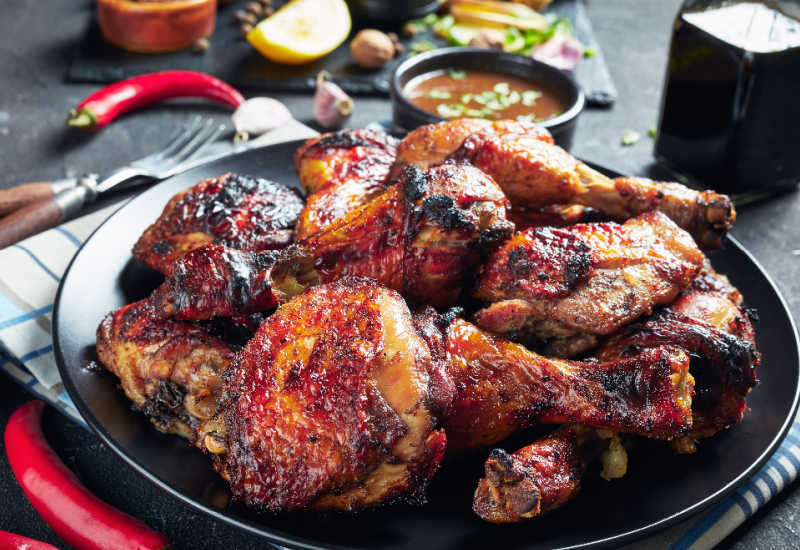

How to make Jamaican jerk chicken!

There are as many takes on jerk chicken in Jamaica as there are cooks on the island, but most share the same method:
Chicken is coated in a seasoning mixture dominated by spices and chiles, then grilled. This version comes from Paul Chung,
a self-taught cook of Chinese-Jamaican descent who adds unique spin to recipe
Ingredients
- 1 medium onion, coarsely chopped
- 3 medium scallions, chopped
- 2 Scotch bonnet chiles, chopped
- 2 garlic cloves, chopped
- 1 tablespoon five-spice powder
- 1 tablespoon allspice berries, coarsely ground
- 1 tablespoon coarsely ground pepper
- 1 teaspoon dried thyme, crumbled
- 1 teaspoon freshly grated nutmeg
- 1 teaspoon salt
- 1/2 cup soy sauce
- 1 tablespoon vegetable oil
- Two 3 1/2- to 4-pound chickens, quartered
Prep & Grill!
- In a food processor, combine the onion, scallions, chiles, garlic, five-spice powder, allspice, pepper, thyme,
nutmeg and salt; process to a coarse paste. With the machine on, add the the soy sauce and oil in a steady stream.
Pour the marinade into a large, shallow dish, add the chicken and turn to coat. Cover and refrigerate overnight.
Bring the chicken to room temperature before proceeding.
- Light a grill. Grill the chicken over a medium-hot fire, turning occasionally, until well browned and cooked through, 35 to 40 minutes.
(Cover the grill for a smokier flavor.) Transfer the chicken to a platter and serve.
Back to the Top